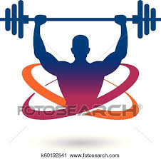
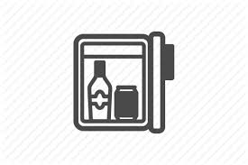
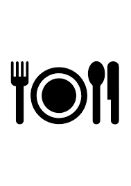
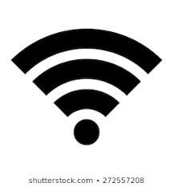
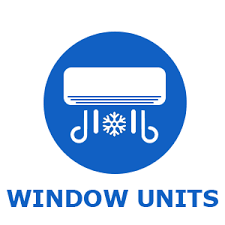
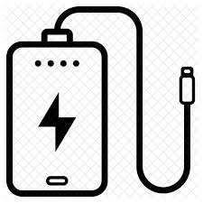
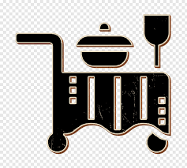

Be it any celebration, good food is what everyone looks to have, and we at Chhindwara Hotel Dev International multi-cuisine restaurant strive for that every time. We try
our best to serve our guests with delightful recipes which makes us one of the best celebration restaurants in Chhindwara with multi-cuisine food items.
Our restaurant location, which is around 10 minutes from the Chhindwara railway station and 5 minutes from the Chhindwara bus stand, makes it an easily accessible
venue and the multi-cuisine recipes amidst a clean and relaxed atmosphere is worth it. Either it is any celebration at Chhindwara, marriage celebration, anniversary
celebration, college get-together or simply quality time with your family or friends we are open for all events.
The multi-cuisine food quality, ever-helpful staff, lip-smacking desserts, or your favorite drinks makes the celebration restaurant in Hotel Dev International as one of the
most popular restaurants in Chhindwara.
Hotel Dev International at Chhindwara offers a wide selection of delicious multi-cuisine items from Indian, Asian, to Continental Cuisine. We are ever-motivated to make
the celebration at our Chhindwara restaurant along with loved ones a memorable one. If you are fond of yummy snacks over a hot cuppa, you will definitely enjoy our hot
coffee. Even the Indian tea goes well with our wide range of bites. It is worth a try.
|
AMPLE PARKING |

GYMNASIUM |
DOCTOR ON CALL |
SAME DAY LAUNDARY |

MINI REFRIGERATOR |

COMPLEMENTARY BUFFET BREAKFAST |
|

WIFI ENABLED AND INTERNET FACILITIES |

AIR CONDITIONED ROOMS AND SUITES |
DIRECT DIALING DUAL LINE TELEPHONR |
LCD TV-WITH CABLE TRANSMISSION |

CONSTANT POWER BACKUP |

READY TO DELIGHT 24HOURS ROOM SERVICE |
|
TRAVEL ASSISTANCE AND CAR RENTALS |
MAJOR CREDIT CARD ACCEPTANCE |
STD/ISD/FAX/FACILITY |
TEA/COFFEE MAKER |
We are committed to giving an excellent dining experience at our Chhindwara hotel offering you the finest Indian food. If you are a pure veg food lover, you will not be
disappointed either. We have got special Indian veg items for you right from North Indian dishes to South Indian flavors.
In Veg Food we serve items like veg sweet corn soup, noodle soup while among starters Veg Manchurian Dry, Chilly Paneer Dry is worth a try. If you are keen on Chinese
food, you might like our veg schezwan noodles while veg Manchurian gravy with veg fried rice is a hit among most foodies. Our Daal Makhani with hot steamed rice or
jeera rice and the combo of paneer butter masala is tempting too.
Various chicken soups along with noodles are a delight for nonveg food lovers. For the main course, guests often check out our appealing Chicken Manchurian Gravy
along with Chicken fried rice. Among Continental Food at our Chhindwara restaurant, we serve pizza, sizzlers, and pasta among a host of other multi cuisine items.